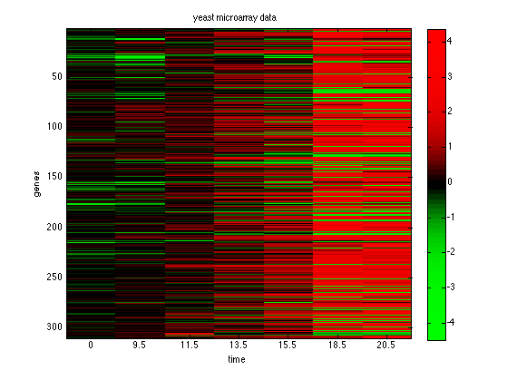
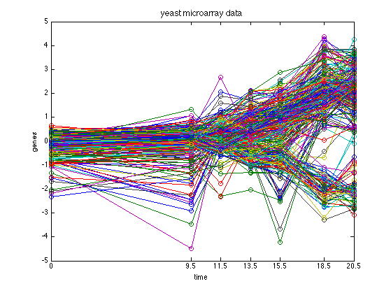
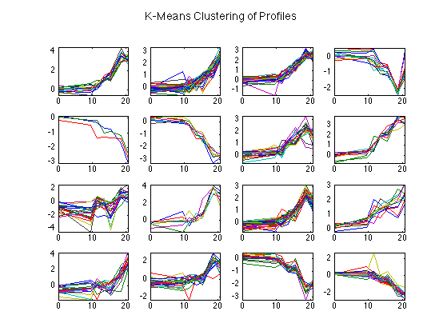
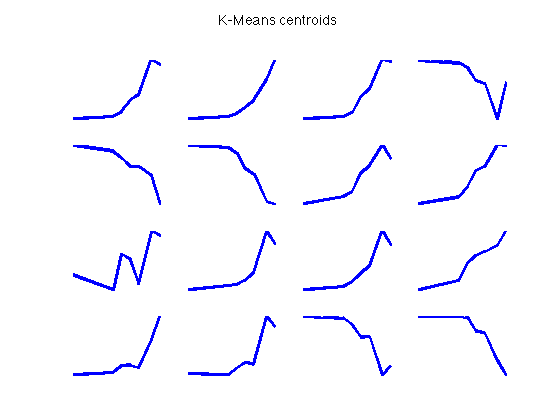

Cluster yeast data using Kmeans
loadData('yeastData310')
figure;imagesc(X);
colormap(redgreenColormap)
xlabel('time')
set(gca,'xticklabel',times)
ylabel('genes')
title('yeast microarray data')
colorbar
printPmtkFigure('yeastHeatMap');
figure; plot(times,X,'o-');
xlabel('time')
set(gca,'xticklabel',times)
set(gca,'xtick',times)
ylabel('genes')
title('yeast microarray data', 'fontsize', 12)
set(gca,'xlim',[0 max(times)])
printPmtkFigure('yeastTimeSeries');
[ctrs, cidx] = kmeansFit(X, 16);
ctrs = ctrs';
figure;
for c = 1:16
subplot(4,4,c);
plot(times,X((cidx == c),:)');
axis tight
end
suptitle('K-Means Clustering of Profiles');
printPmtkFigure('yeastKmeans16')
figure;
for c = 1:16
subplot(4,4,c);
plot(times,ctrs(c,:)','-' ,'linewidth', 3);
axis tight
axis off
end
suptitle('K-Means centroids')
printPmtkFigure('clusterYeastKmeansCentroids16')
   